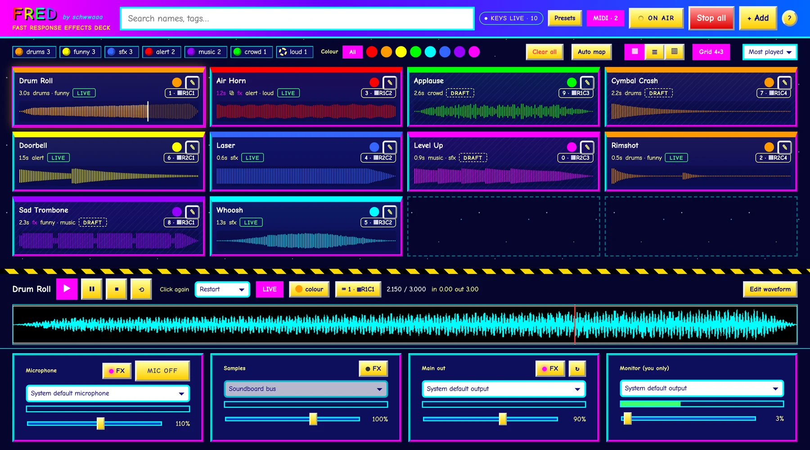
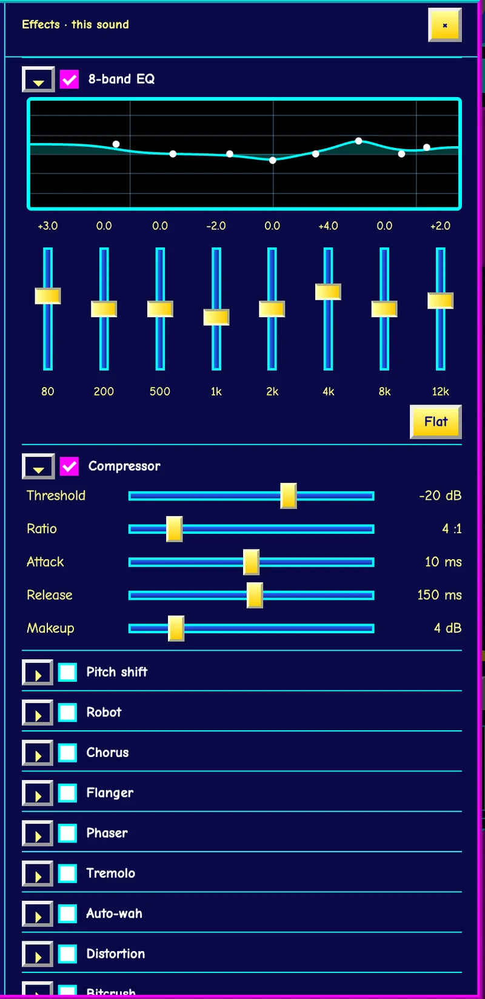
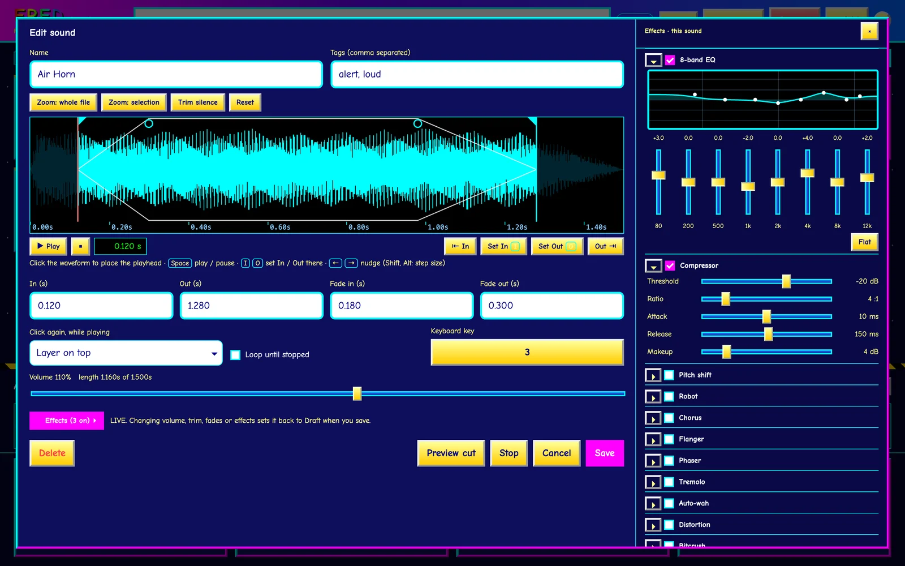
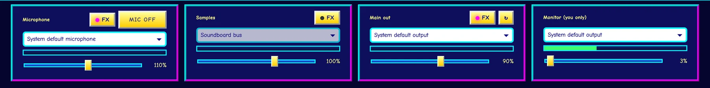

Radio & podcasts
Line up jingles, stingers and beds, and bring each one in on cue. Audition a sound in your headphones first, so only the take you want goes out.
A local soundboard and voice changer that shows up as its own microphone.
Choose FRED Mic as the input in any app that lets you pick a mic, and your voice and your sounds go out together, effects and all. It all runs on your computer.
Alpha · macOS (Apple silicon) tested · Windows on the way

Line up jingles, stingers and beds, and bring each one in on cue. Audition a sound in your headphones first, so only the take you want goes out.
A soundboard and a voice changer in one. Drop in the spell, the door slam or the dramatic sting, and give your character a robot, radio or chipmunk voice.
Airhorns, rimshots and sad trombones on a Zoom or Discord hangout, with a little pitch shift on your voice for good measure.
A virtual microphone built in on macOS. Send FRED’s main output to it and pick it as the input in your call, game, stream or recorder. On Windows, FRED walks you through a free virtual cable.
Every sound is a Draft until you make it Live. Drafts play only in your headphones, so you can audition, tweak and rehearse. The ON AIR switch decides when anything goes out, and your mic always starts off.
Click a card, press a key or hit a pad. Show your board as a grid, a compact list or lanes like tracks in a DAW, and drag sounds into your own order.
Plug in an APC, Launchpad or almost any grid controller. FRED learns a new one in about 30 seconds, then lights each pad in its sound’s colour.
Trim with In and Out points, add fades, loop, and set how a sound behaves when you press it again: restart, stop or layer on top.
Tags, colours and instant search. Presets save the whole project, and your session autosaves, so a crash costs you nothing.
Sixteen effects you can stack on your microphone, your samples, the whole mix, or any single sound:
Save your favourite combinations as presets.



Esc stops everything. Ctrl+M toggles the mic. In the editor, Space plays, and I O set In and Out at the playhead.
Setup, basic operation, effects, MIDI and routing into your apps with FRED Mic.
FRED is in alpha, and early builds go to a small group of testers at a time. Tell us a little about your setup and what you would use it for, so we can bring in people with different machines and different uses.